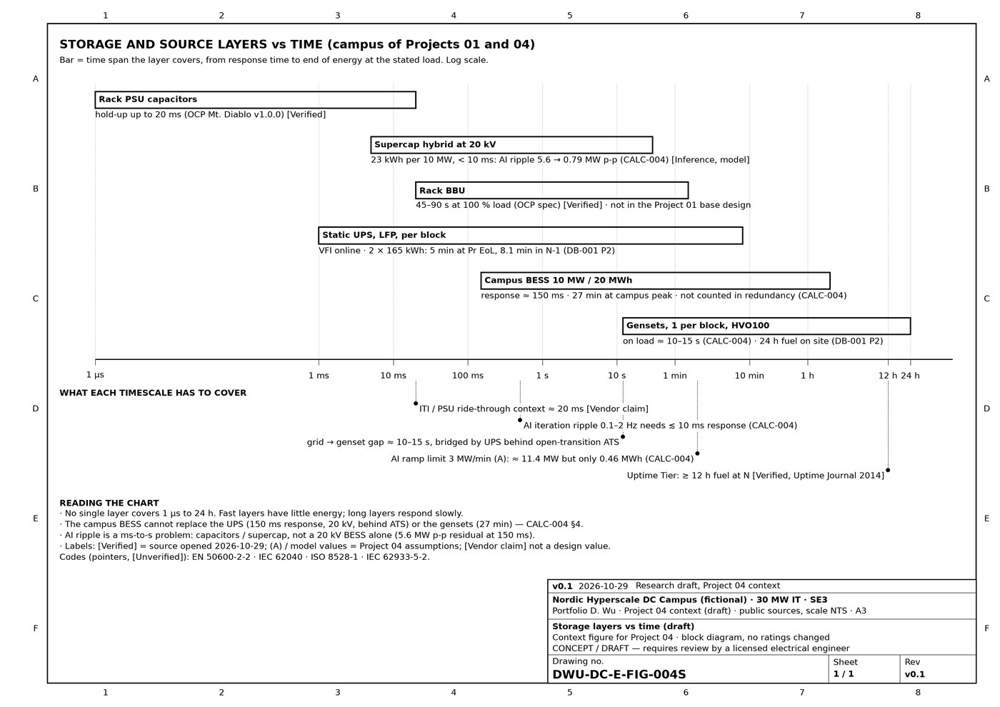

Key findings
- Peak shaving (LP, 8 760 h): without a BESS the campus is 2.08 MW over the limit on the design day. With the BESS there is room for +2.41 MW of extra IT, but only +0.84 MW counts as firm with one BESS unit out.
- Backup: 27 min at full load. Replacing the gensets would take ≈ 790 MWh, about 5.5 × the genset cost. In island mode the PCS fault current (1.2 × In = 381 A at 20 kV) is not cleared by the grid-tuned relays, so the BESS is not counted as Tier III capacity.
- Revenue stacking (FCR-N, FCR-D, mFRR, arbitrage) with Svk endurance rules: 4.15 M€/yr at 2025 prices, 1.82 M€/yr at 2026, 0.96 M€/yr in the saturated case. Base NPV ≈ 7.2 M€, IRR 34 %. The case is highly price-sensitive.
- AI-training swings (12 MW, 6 s): smoothing needs ≈ 11.4 MW but < 0.5 MWh. The 0.1–2 Hz ripple needs a response of ≲ 10 ms, from a supercap or hybrid, UPS-level smoothing or a GPU power floor.
This is a fictional case built from public standards and assumed parameters marked [ASSUMED] / (A). No employer, client or vendor data is used.
Figures
Reduced previews. The full-resolution originals are in the repository.


Context: storage layers
FIG-004S v0.1, CONCEPT / DRAFT — requires review by a licensed electrical engineer. Numbers are taken unchanged from DB-001 Rev P2 and CALC-004; rack BBU and capacitor values come from the OCP spec and are not part of the Project 01 base design.


- Each layer covers one time band. Rack capacitors ride through up to 20 ms, the UPS covers 5 to 8.1 min (rated load at end of life; N-1 load), the campus BESS 27 min, and the gensets 24 h of fuel. Sources: OCP Mt. Diablo v1.0.0 [Verified (KB 2026-10-26)]; DB-001 P2; CALC-004.
- The 10 MW / 20 MWh BESS works in the band from 150 ms to hours. It is not counted in redundancy and does not replace the UPS or the gensets (CALC-004 §4).
- AI-training ripple at 0.1–2 Hz needs a response of about 10 ms or faster. A 150 ms BESS still leaves 5.6 MW peak-to-peak, so the fast band needs capacitors or a supercap. A 23 kWh supercap per 10 MW brings it down to 0.79 MW (CALC-004 model).
- The 3 MW/min ramp limit (A) is a power problem, not an energy one: about 11.4 MW but only 0.46 MWh (CALC-004).
- The 10–15 s gap between grid loss and the gensets is bridged by the UPS behind the open-transition ATS, not by the BESS at 20 kV (CALC-004; DB-001 IL-3).
- Uptime sets at least 12 h of fuel at N for all Tiers; this campus holds 24 h. Source: Uptime Institute Journal [Verified, opened 2026-10-29].
- Rack BBUs (45–90 s at 100 % load) would only come in with an 800 VDC rack design. See Project 05 and the OCP Mt. Diablo spec [Verified (KB 2026-10-26)].
Labels: [Verified] source opened · [Vendor claim] · [Search-level] · [Unverified] · [Inference] own reasoning · (A) assumed. Retrieval date 2026-10-29.
Other projects: 01 Design basis & single-line diagrams · 02 Load & equipment sizing tool · 03 Short-circuit, protection & arc-flash study · 05 Next-generation power architecture and commissioning (research and concept study)